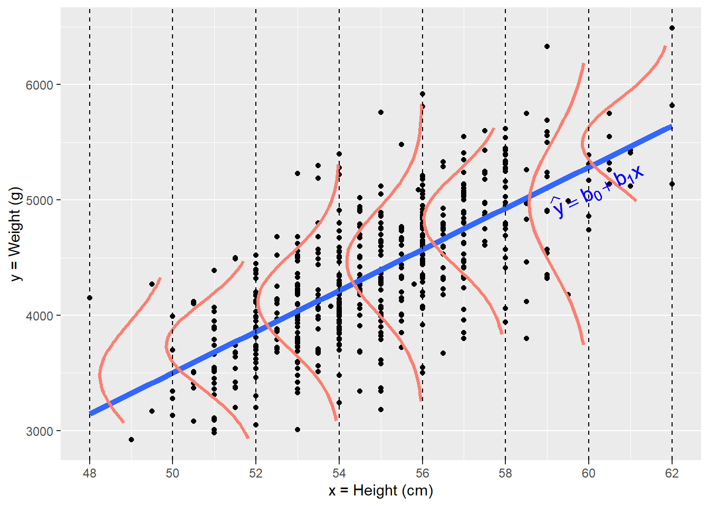
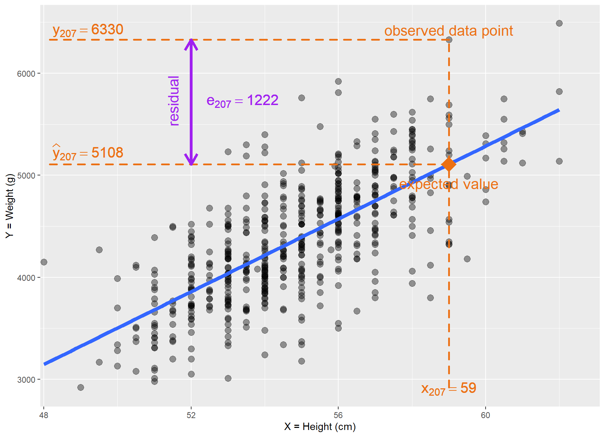
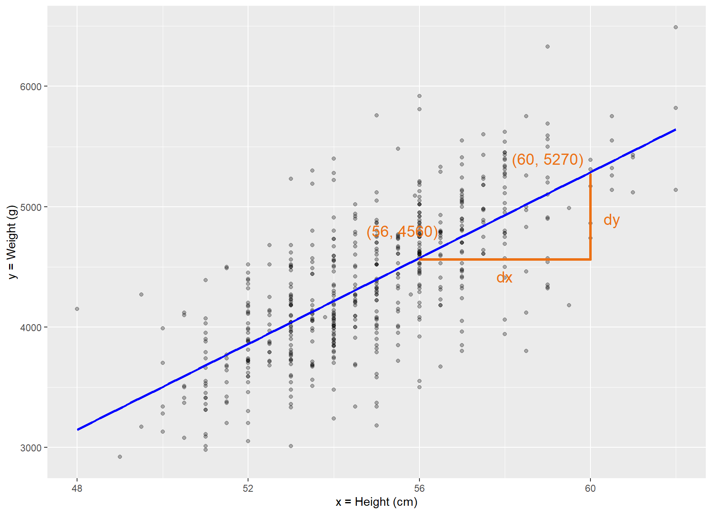
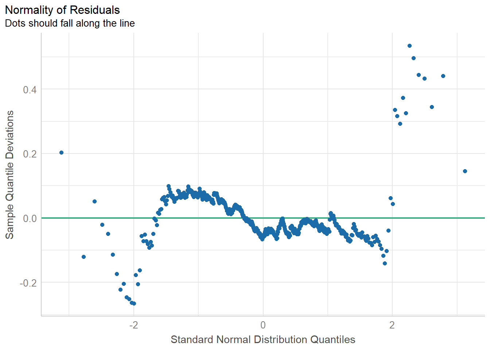

In this chapter, we explore an extension of correlation for investigating the association between two variables: the simple linear regression.
When we have finished this Chapter, we should be able to:
Learning objectives
Fit and interpret simple linear models
Assess the quality of a linear regression fit
27.1 The mathematical equation of a straight line
Simple linear regression involves a numeric dependent (or outcome) variable \(Y\) and one independent (or explanatory) variable \(X\) that is either numeric or categorical.
The general equation of a straight line is: \[
y = \beta_0 + \beta_1 \cdot x
\tag{27.1}\]
Show the code
# Create example datadata<-data.frame(x =c(-1:5), y =c(-1:5)+1)# Create a linear regression line with annotationsggplot(data, aes(x =x, y =y))+geom_smooth(method ="lm", se =FALSE, linetype ="dashed")+labs(title ="Linear Regression Plot")+geom_hline(yintercept =0, color ="black", linetype ="solid")+geom_vline(xintercept =0, color ="black", linetype ="solid")+annotate("text", x =-0.2, y =5.5, label ="Y Variable", angle =90)+annotate("text", x =4.4, y =-0.18, label ="X Variable")+theme(axis.title =element_blank())+annotate("point", x =0, y =1, col ="black", shape =16, size =2.5)+geom_segment( x =-0.6, y =1, xend =-0.15, yend =1, lineend ="round", linejoin ="round", size =1.2, arrow =arrow(length =unit(0.12, "inches")), colour ="#EC7014")+annotate("text", x =-0.8, y =1, label =bquote(β[0]), color ="#EC7014")+geom_segment( x =2, y =3, xend =3, yend =3, lineend ="round", linejoin ="round", size =1.2, colour ="#EC7014")+geom_segment( x =3, y =3, xend =3, yend =4, lineend ="round", linejoin ="round", size =1.2, colour ="#EC7014")+annotate("text", x =2.5, y =2.8, label ="1 unit", color ="#EC7014")+annotate("text", x =3.4, y =3.5, label =bquote(β[1]), color ="#EC7014")+coord_fixed(ratio =1)
Figure 27.1: Parameters of a straight line.
The Equation 27.1 is defined by two coefficients (parameters) \(\beta_0\) and \(\beta_1\).
The intercept coefficient\(\beta_0\) is the value of \(y\) when \(x = 0\) (the black point where the dashed blue line crosses the y-axis; Figure 27.1).
The slope coefficient\(\beta_1\) for \(x\) is the change in \(y\) for every one unit increase in \(x\) (Figure 27.1).
Comment
The term “dependent” does not necessarily imply a cause and effect association between the two variables.
27.2 Research question
Continuing from the previous chapter, we’re analyzing the data in the BirthWeight dataset exploring the association between weight and height of the infants. But now, our aim is to build a model where the dependent variable Y is a function of the explanatory variable X.
Figure 27.3: Scatter plot of height and weight of 550 infants of 1 month age.
In Figure 27.3, the points are scattered around an invisible line. The objective is to find a mathematical approach that yields a line that, on average, goes through most of the points on the graph. This line is commonly known as a regression line or a line of best fit (blue line in Figure 27.4). We write the equation of the best-fitting line as:
\[\widehat{y} = b_0 + b_1 \cdot x \tag{27.2}\]
where \(b_0\) and \(b_1\) are best choices or estimates of the parameters \(\beta_0\) and \(\beta_1\) in Equation 27.1, and \(\hat y\) is the value of Y that is expected by this model for a specified value of X. We can interpret the “hat” notation as the dependent variable Y having a distribution (orange curve) with mean equals to \(\widehat{y}\) for any given value of variable X (Figure 27.4).
Show the code
x<-BirthWeight$heighty<-BirthWeight$weightdat<-data.frame(x, y)# breaks: where you want to compute densitiesbreaks<-seq(min(dat$x), max(dat$x), length.out =8)dat$section<-cut(dat$x, breaks)# Get the residualsdat$res<-residuals(lm(y~x, data =dat))# Compute densities for each section, and flip the axes, and add means of sections# Note: the densities need to be scaled in relation to the section size (2000 here)dens<-do.call(rbind, lapply(split(dat, dat$section), function(x){d<-density(x$res, n =50)res<-data.frame(x =max(x$x)-d$y*2000, y =d$x+mean(x$y))res<-res[order(res$y), ]## Get some data for normal lines as wellxs<-seq(min(x$res), max(x$res), length.out =50)res<-rbind(res, data.frame(y =xs+mean(x$y), x =max(x$x)-2000*dnorm(xs, 0, sd(x$res))))res$type<-rep(c("empirical", "normal"), each =50)res}))dens$section<-rep(levels(dat$section), each =100)## the plotggplot(dat, aes(x, y))+geom_point()+geom_smooth(method ="lm", fill =NA, lwd =2)+geom_path(data=dens[dens$type=="normal",], aes(x, y, group =section), color ="salmon", lwd =1.1)+theme_prism(base_size =14, base_line_size =0.4, palette ="office")+geom_vline(xintercept =breaks, lty =2)+scale_x_continuous(breaks =breaks)+annotate("text", x =60.2, y =5100, label =bquote(widehat(y)==b[0]+b[1]*x), color ="blue", angle =25.7, size =5)+labs(x ="x = Height (cm)", y ="y = Weight (g)")

Figure 27.4: The Y variable having a distribution (orange curve) for any given value of variable X .
We define the following three concepts:
Observed value \(y_i\): the observed value of the dependent variable Y for a given \(x_i\) value.
Expected (or fitted) value \(\widehat{y_i}\): the value of the dependent variable Y that is expected by the model for a given \(x_i\) value.
Residual\(e_i\): the deviation (error) between the observed value \(y_i\) and the expected value \(\hat y\) for a given \(x_i\) value (\(e_i = y_i - \hat y_i\)).
Let’s see, for example, the values for the infant in the position 207 in our data set (Figure 27.5).
Show the code
ggplot(BirthWeight, aes(height, weight))+geom_point(size =3, alpha =0.4)+geom_smooth(method ="lm", fill =NA, lwd =2)+annotate("point", x =59, y =5108, col ="#EC7014", shape =18, size =7.5)+geom_segment( x =59, y =min(BirthWeight$weight), xend =59, yend =6330, lineend ="round", linejoin ="round", size =1, colour ="#EC7014", linetype ="dashed")+geom_segment( x =59, y =5108, xend =min(BirthWeight$height), yend =5108, lineend ="round", linejoin ="round", size =1, colour ="#EC7014", linetype ="dashed")+geom_segment( x =59, y =6330, xend =min(BirthWeight$height), yend =6330, lineend ="round", linejoin ="round", size =1, colour ="#EC7014", linetype ="dashed")+geom_segment( x =52, y =5108, xend =52, yend =6330, arrow =arrow(length =unit(0.03, "npc"), ends ="both"), size =1.5, colour ="purple", ends ="both")+annotate("text", x =59, y =2910, label =bquote(x[207]==59), color ="#EC7014", size =5.5)+annotate("text", x =59, y =4920, label ="expected value", color ="#EC7014", size =5.5)+annotate("text", x =59, y =6425, label ="observed data point", color ="#EC7014", size =5.5)+annotate("text", x =49.2, y =5230, label =bquote(widehat(y)[207]==5108), color ="#EC7014", size =5.5)+annotate("text", x =49.2, y =6425, label =bquote(y[207]==6330), color ="#EC7014", size =5.5)+annotate("text", x =53.4, y =5730, label =bquote(e[207]==1222), color ="purple", size =5.5)+annotate("text", x =51.5, y =5730, label ="residual", color ="purple", size =5.5, angle =90)+theme_prism(base_size =14, base_line_size =0.4, palette ="office")+scale_x_continuous(expand =c(0, 0), limits =c(47.9, 63.1))+labs(x ="X = Height (cm)", y ="Y = Weight (g)")

Figure 27.5: Explanation of the basic concepts of the linear model.
The observed value\(y\) = 6330 g is infant’s weight for \(x\) = 59 cm.
The expected value\(\widehat{y}\) is the value 5108 g on the regression line for \(x\) = 59. This value can be computed by the Equation 27.7.
The residual is computed by subtracting the expected (fitted) value \(\widehat{y}\) from the observed value \(y\). In the case, it is \(y - \widehat{y}\) = 6330 - 5108 = 1222 g.
Comment
The residuals are exactly the vertical distance between the observed data point and the associated point on the regression line (expected value) (Figure 27.5). Positive residuals are associated with y values above the fitted line, while negative residuals correspond to values below the line.
Residuals can be thought of as “noise” - they are fluctuations caused by various factors, preventing the observed values from forming a perfectly straight line on the scatter plot. Residuals play a crucial role in linear regression as they provide valuable insights into the assessment of a linear regression model.
27.6 Ordinary least squares (OLS) estimation of \(b_0\) and \(b_1\) in matrix form
Let’s describe for the \(i^{th}\) observation the underlying association between \(y_i\) and \(x_i\) by:
\[y_i = b_0 + b_1 \cdot x_i + e_i \tag{27.3}\]
where the \(e_i\) is the error term, called residual, which represents the deviation between the observed value \(y_i\) and the expected value \(\hat y\) of the linear model (\(e_i = y_i - \hat y_i\)).
In a matrix notation, given \(n\) observations of the explanatory variable x and the outcome variable y, the Equation 27.3 becomes:
where the matrix X is called the design matrix (the first column contains 1s, and the second column contains the actual observations of x).
The coefficients \(b_0\) and \(b_1\) are selected by minimizing the sum of squares of the residuals \(e\). It can be proven that the least squares estimates are obtained by the following matrix formula:
The intercept \(b_0\) = -5412.14 is the mean weight for those infants with height of 0. Visually, it’s the point where the line crosses the y-axis when x equals 0 (Figure 27.6).
Show the code
# Create a linear regression line with annotationsggplot(BirthWeight, aes(x =height, y =weight))+geom_point(alpha =0.5)+geom_smooth(method ="lm", se =FALSE, color ="blue", fullrange =TRUE)+xlim(0, 62)+ylim(-6000, 6500)+geom_hline(yintercept =0, color ="black", linetype ="solid")+geom_vline(xintercept =0, color ="black", linetype ="solid")+annotate("text", x =19.0, y =-1000, label =bquote(paste(widehat(weight), "= -5412.14 + 178.31*height")), color ="blue", angle =32, size =5)+theme_prism(base_size =14, base_line_size =0.4, palette ="office")+labs(x ="x = Height (cm)", y ="y = Weight (g)")
Figure 27.6: Scatter plot with fitted line crossing the y-axis.
Comment
Note that while there is a mathematical interpretation for the intercept of the regression line, it doesn’t hold any physical meaning in this case, as the observation of a weight of 0 is not feasible.
Of greater importance is the slope of the fitted line, \(b_1 = 178.31\), as this describes the association between the height and weight variables.
Show the code
# Create a linear regression line with annotationsggplot(BirthWeight, aes(x =height, y =weight))+geom_point(alpha =0.3)+geom_smooth(method ="lm", se =FALSE, color ="blue", fullrange =TRUE)+theme_prism(base_size =14, base_line_size =0.4, palette ="office")+labs(x ="x = Height (cm)", y ="y = Weight (g)")+geom_segment( x =56, y =4560, xend =60, yend =4560, lineend ="round", linejoin ="round", size =1.2, colour ="#EC7014")+geom_segment( x =60, y =4560, xend =60, yend =5270, lineend ="round", linejoin ="round", size =1.2, colour ="#EC7014")+annotate("text", x =55.6, y =4800, label ="(56, 4560)", color ="#EC7014", size =5)+annotate("text", x =59, y =5400, label ="(60, 5270)", color ="#EC7014", size =5)+annotate("text", x =58, y =4420, label ="dx", color ="#EC7014", size =5)+annotate("text", x =60.5, y =4900, label ="dy", color ="#EC7014", size =5)

Figure 27.7: Graphical calculation of the slope in simple linear regression.
The graphical calculation of the slope from two points of the fitted blue line is (Figure 34.3):
The positive slope indicates a positive association between height and weight. This implies that infants with greater height also generally exhibit increased weight.
For every 1 cm increase in height, there is on average an associated increase of 178 g in weight.
27.7 The Standard error (SE) of the coefficients
The standard error is a way to measure the “uncertainty” in the estimate of the regression coefficients and it can be calculated by:
In order to compute the variance-covariance matrix in Equation 27.10, we need to calculate the residual variance (i.e., mean squared residuals) for the model:
the residual sum of squares (also known as sum of squares error) is \(SS_{residuals} = \mathbf{e}^2 =\mathbf{e}^\intercal\mathbf{e}\)
the degrees of freedom are \(df_{residuals} = n -k\), where \(k\) is the number of coefficients (including the intercept) being estimated in the regression model. Defining, the hat matrix, or the H-matrix, as: \[
\mathbf{H} = \mathbf{X}(\mathbf{X}^{\intercal}\mathbf{X})^{-1}\mathbf{X}^{\intercal}
\tag{27.12}\] the \(k\) equals to the trace of the H-matrix.
# calculate the residualse<-Y-X%*%B# compute the residual sum of squares (sum of squares error)ss_e<-t(e)%*%e# compute the H-matrixH<-X%*%solve(t(X)%*%X)%*%t(X)# compute the residual variancevar_e<-ss_e/(n-tr(H))# find the variance-covariance matrix of the coefficientsvar_covar_matrix<-as.numeric(var_e)*solve(t(X)%*%X)var_covar_matrix
The null hypothesis, \(H_{0}\), states that the coefficients are equal to zero, and the alternative hypothesis, \(H_{1}\), states that the coefficients are not equal to zero.
The t-statistic for the coefficients are defined by the following equation:
# obtain critical value for 95% CIt_star<-qt(0.025, df =n-tr(H), lower.tail =FALSE)# compute lower limit of 95% CIB-t_star*std_error_B
[,1]
intercept -6219.5520
height 163.5992
# compute upper limit of 95% CIB+t_star*std_error_B
[,1]
intercept -4604.7375
height 193.0164
27.9 lm() function
As anticipated, R provides a built-in function for the purpose of fitting linear regression models. We can utilize the lm() function to perform this task.
Classical approach
model_lm<-lm(weight~height, data =BirthWeight)model_lm
All the estimates and statistics of interest for the regression model are presented in the following summary table (Figure 27.8):
term
estimate
std_error
statistic
p_value
lower_ci
upper_ci
intercept
-5412.15
411.04
-13.17
<0.001
-6219.55
-4604.74
height
178.31
7.49
23.81
<0.001
163.60
193.02
Figure 27.8: The linear regression table.
27.10 Verifying Model Assumptions
Specific assumptions have to be met for reliable hypothesis tests and confidence intervals in simple linear regression: linearity of the data, independence of the residuals, normality of the residuals, and equality of variance of the residuals.
We will describe some statistical test and diagnostic plots in R for testing the assumptions underlying linear regression model.
Warning
Variations or different versions of the statistical tests may have different results.
Linearity of the data
Linear association between the independent variable x and the dependent variable (outcome) y.
Residuals vs Fitted values plot is used to check the linear association assumption. We would expect to see a random scatter of points around the horizontal dashed line at zero, as demonstrated in our example. The green line is a scatter plot smoother, showing the average value of the residuals corresponding to each fitted value. A horizontal green line, without noticeable patterns or curvature, indicates a linear association.
Independence of the residuals
The residuals (or errors) resulting from the model should be independent of each other.
Statistical test: Durbin-Watson test
We can perform a Durbin-Watson-Test to check for autocorrelated residuals (a p-value < 0.05 indicates autocorrelated residuals).
Warning: Non-normality of residuals detected (p = 0.021).
The function performs a shapiro.test and checks the standardized residuals for normal distribution. According to the documentation “this formal test almost always yields significant results for the distribution of residuals for large samples and visual inspection (e.g., Q-Q plots) are preferable.”
Plot: Normal Q-Q plot
diagnostic_plots[5]
$QQ

Normal Q-Q plot is used to examine whether the residuals are roughly normally distributed. Ideally, the standardized residuals points should follow the green line. In our example, the normal Q-Q normal plot does not deviate greatly from normal.
Equality of variance of the residuals (Homoscedasticity)
The spread or dispersion of the residuals should remain roughly the same for all values of the X variable.
Statistical test: Breusch-Pagan test
The most common test for checking equality of variance of the residuals (homoskedasticity) is the Breush-Pagan test (a p-value < 0.05 indicates presence of heteroscedasticity).
studentized Breusch-Pagan test
data: model_lm
BP = 1.9331, df = 1, p-value = 0.1644
Plot: Square root of standardized residuals vs Fitted values
diagnostic_plots[3]
$HOMOGENEITY
This plot checks the assumption of equal variance of the residuals (homoscedasticity). To verify the assumption, we plot the square root of standardized residuals against the fitted values from the regression. In this case, the residuals are re-scaled and all values are positive. A horizontal line with equally spread points would be the desired pattern, as demonstrated in our example. However, if the spread of residuals widens or narrows systematically as we move along the x-axis, it indicates a violation of homoscedasticity.
Influential observations in the data
The dataset should not include data points with exceptional influence on the model.
Plot: Standardized residuals vs Leverage
diagnostic_plots[4]
$OUTLIERS
This plot is used to detect influential observations. These data are outlier points that might have a substantial impact on the regression model’s results when included or excluded from the analysis. If any point in this plot fall outside the dashed green lines then it is considered an influential observation. In our example, all the data points are inside the dashed green lines suggesting that none of the observations is influential on the fitted model.
Comment
The standardized residual is the residual divided by its standard deviation. The standardization, which results in a mean of zero and a variance of one, enables the residuals to be compared on the “standard scale”. When a standardized residual falls within the range of +/- 2, it indicates an unusual observation, while a value between +/- 3 indicates a highly unusual data”.
27.11 Model evaluation
Two related measures are typically used to evaluate the linear regression model: the residual standard error (RSE) and the coefficient of determination \(R^2\).
Residual standard error (RSE)
The residual standard error is the square root of the residual variance \(\sigma^2_{e}\) that we have already calculated. It informs us about the average error of the regression model in terms of the units of the outcome variable. Lower values are better because it indicates that the observations are closer to the fitted line. In our example:
The regression model allows us to divide the total variation in the outcome into two components: one explained by the model, and the other that remains unexplained by the model.
The coefficient of determination, \(R^2\), indicates the percentage of the total variation in the dependent variable Y that can be explained by the regression model (in this simple case the independent variable X). Hence, it is a measure of the ‘goodness of fit’ of the regression line to the data.
The R-squared measure ranges between 0 and 1. When \(R^2\) approaches 1 indicates that a substantial proportion of the variation in the dependent variable Y has been explained by the regression model. Conversely, when it nears 0, it implies that the regression model has not effectively explained the majority of the variation in the outcome.
In our example, \(R^2 = 0.508\) indicates that about 50.8% of the variation in infant’s body weight can be explained by the variation of the infant’s body height.
Comment
In simple linear regression \(\sqrt{0.5085} = 0.713\) which equals to the Pearson’s correlation coefficient r.
We fitted a linear model (estimated using OLS) to predict weight with height
(formula: weight ~ height). The model explains a statistically significant and
substantial proportion of variance (R2 = 0.51, F(1, 548) = 567.04, p < .001,
adj. R2 = 0.51). The model's intercept, corresponding to height = 0, is at
-5412.14 (95% CI [-6219.55, -4604.74], t(548) = -13.17, p < .001). Within this
model:
- The effect of height is statistically significant and positive (beta =
178.31, 95% CI [163.60, 193.02], t(548) = 23.81, p < .001; Std. beta = 0.71,
95% CI [0.65, 0.77])
Standardized parameters were obtained by fitting the model on a standardized
version of the dataset. 95% Confidence Intervals (CIs) and p-values were
computed using a Wald t-distribution approximation.
We can use the above information to write up a final report:
Final report
In summary, the regression coefficient of the height is positive and significantly different from zero (p < 0.001). There is on average an increase of 178 g (\(95\%\)CI: 164 to 193) in weight for every 1 cm increase in height. The model explains a substantial proportion of variance (51% of the variation in infant’s body weight can be explained by the variation of the infant’s body height).